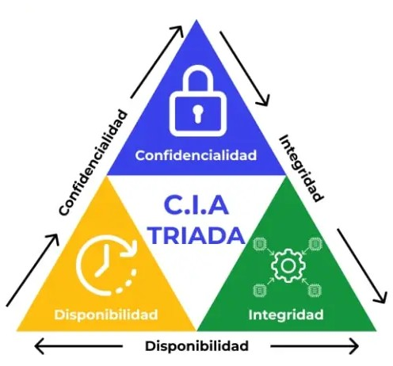

Triada CIA
Confidencialidad
Se refiere a la protección de la información frente a accesos no autorizados. Esto garantiza que solo las personas con los permisos adecuados puedan visualizar, modificar o gestionar datos sensibles, evitando fugas o filtraciones que puedan comprometer la seguridad de la organización o los individuos.
Disponibilidad
Se trata de garantizar que la información y los sistemas que la gestionan estén accesibles cuando se necesiten. Un buen nivel de disponibilidad significa que los datos pueden ser consultados sin interrupciones, asegurando la continuidad de procesos clave, evitando tiempos de inactividad y optimizando el acceso en momentos críticos.
Integridad
Implica la protección de la información contra cualquier alteración o manipulación no autorizada. Esto asegura que los datos permanezcan precisos, confiables y sin modificaciones indebidas por errores, fallos del sistema o ataques malintencionados, manteniendo su validez y utilidad en todo momento.

Ciber Ataques
Caída de Facebook, WhatsApp e Instagram
El 4 de octubre de 2021, Facebook, WhatsApp e Instagram sufrieron una interrupción global de más de 6 horas, dejando a miles de millones de usuarios sin acceso a estas plataformas. El problema se debió a un error en la configuración del Border Gateway Protocol (BGP), lo que hizo que los servidores de esas aplicaciones quedaran inaccesibles.
El principio de la trialidad de CIA violado fue el de disponibilidad, ya que los servicios de dichas aplicaciones dejaron de estar disponibles a nivel mundial, afectando a usuarios, empresas y empleados de la propia compañía.
Ataque a Sony Pictures
El grupo de hackers Guardians of Peace se infiltró en los sistemas de la compañía y expuso correos internos, guiones inéditos y datos personales de empleados. También se usó un malware destructivo para borrar archivos y paralizar sistemas.
En este ataque se afectó la integridad ya que se eliminaron y manipularon archivos críticos.
Ataque a la CJEF
El 15 de noviembre, el grupo criminal RansomHub atacó la Consejería Jurídica del Poder Ejecutivo Federal (CJEF) de México, robando más de 300GB de información confidencial, incluyendo contratos, presupuestos y datos personales de funcionarios.
Aquí se violó la confidencialidad, debido a que se filtró información privada a la Dark Web tras negar el pago por el rescate.